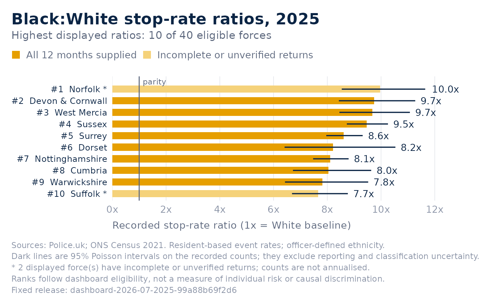
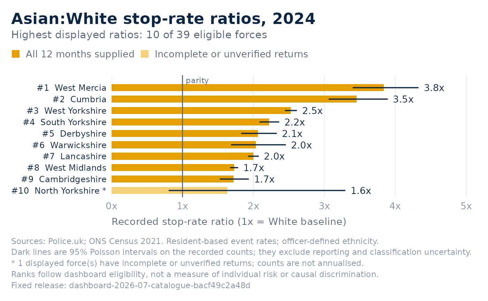

Recreates the values, eligibility rule and ordering of the dashboard's ranking of forces by the rate at which one group is stopped compared with White residents. This is a static ggplot version: interactive hover text and previous-year change annotations are not reproduced. Partial reporting is labelled explicitly, each bar carries its 95% interval, and one force can be highlighted as the dashboard's selected force.
Usage
btg_plot_disparity(
x = btg_get_data(),
n = 10L,
ranking = c("highest", "lowest", "closest"),
year = NULL,
group = NULL,
highlight = NULL
)Arguments
- x
A dataset from
btg_get_data():force_disparity(2025, Black) orforce_ethnicity_year(any year and group it holds).- n
Maximum number of displayed forces, from 1 to 44.
- ranking
One of
"highest","lowest", or"closest"to parity.- year
The calendar year to draw.
NULLdraws the latest year the source covers in full, which is the dashboard's starting year.- group
The group compared with White:
"Black","Asian","Mixed"or"Other".NULLdraws Black.- highlight
Optional Police.uk identifier of one force to draw in the selected-force colour, as the dashboard does for its chosen force.
Value
An editable ggplot with a saved evidence specification. The
underlying original chart table is available with btg_figure_data().
Details
Ranks refer to every eligible force in that year and group, even
after selecting forces. The solid line is parity (1). An asterisk and a
lighter fill mark incomplete or unverified monthly returns; the dashboard
verifies submissions only inside a recent window, so earlier years show
every force as unverified; when that is true of every displayed force the
bars keep the ordinary fill and the caption says so. A highlighted force is
drawn only if it falls within the n displayed forces, as on the
dashboard. Counts are not annualised. Display eligibility does not imply
complete or comparable exposure, or establish discrimination.
Examples
p <- btg_plot_disparity(btg_get_data())
p

head(btg_figure_data(p))
#> force force_label pfa_code year black_stops white_stops
#> 1 norfolk Norfolk E23000024 2025 175 1817
#> 2 devon-and-cornwall Devon & Cornwall E23000035 2025 189 4925
#> 3 west-mercia West Mercia E23000016 2025 229 2591
#> 4 sussex Sussex E23000033 2025 665 5102
#> 5 surrey Surrey E23000031 2025 731 4191
#> 6 dorset Dorset E23000039 2025 66 1109
#> known_ethnicity_stops unknown_ethnicity_stops total_records black_population
#> 1 2122 67 2189 8376
#> 2 5286 217 5503 6768
#> 3 3298 153 3451 11185
#> 4 6331 67 6398 21388
#> 5 5576 96 5672 20832
#> 6 1234 349 1583 5315
#> white_population months_supplied months_missing months_unverified
#> 1 867152 11 1 0
#> 2 1719233 12 0 0
#> 3 1224249 12 0 0
#> 4 1552521 12 0 0
#> 5 1028639 12 0 0
#> 6 733925 12 0 0
#> coverage_status small_population comparable ratio white_rate
#> 1 partial_year FALSE TRUE 9.971068 2.095365
#> 2 all_months_supplied FALSE TRUE 9.748324 2.864650
#> 3 all_months_supplied FALSE TRUE 9.673905 2.116400
#> 4 all_months_supplied FALSE TRUE 9.461250 3.286268
#> 5 all_months_supplied FALSE TRUE 8.612550 4.074316
#> 6 all_months_supplied FALSE TRUE 8.217899 1.511054
#> black_rate ci_upper ci_lower eligible rank axis_label value_label
#> 1 20.89303 11.644313 8.538263 TRUE 1 #1 Norfolk * 10.0x
#> 2 27.92553 11.272561 8.430189 TRUE 2 #2 Devon & Cornwall 9.7x
#> 3 20.47385 11.073475 8.451227 TRUE 3 #3 West Mercia 9.7x
#> 4 31.09220 10.257510 8.726800 TRUE 4 #4 Sussex 9.5x
#> 5 35.09025 9.316438 7.961842 TRUE 5 #5 Surrey 8.6x
#> 6 12.41769 10.534385 6.410803 TRUE 6 #6 Dorset 8.2x
y <- btg_get_data("force_ethnicity_year")
btg_plot_disparity(y, year = 2024, group = "Asian", highlight = "metropolitan")
